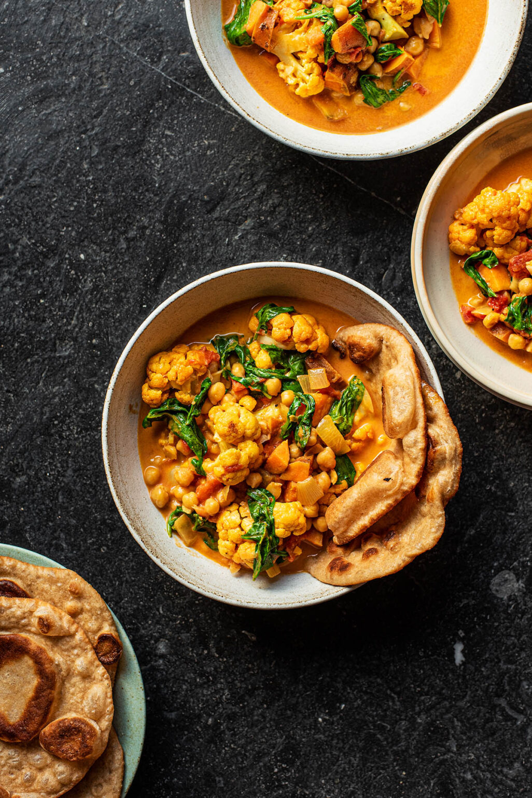

Chickpea Curry

Ingredients
- 2 tablespoons vegetable oil
- 2 onions, minced
- 2 cloves garlic, minced
- 2 teaspoons fresh ginger root, finely chopped
- 6 whole cloves
- 2 (2 inch) sticks cinnamon, crushed
- 1 teaspoon ground cumin
- 1 teaspoon ground coriander
- salt
- 1 teaspoon cayenne pepper
- 1 teaspoon ground turmeric
- 2 (15 ounce) cans garbanzo beans
- 1 cup chopped fresh cilantro
Steps
- Heat oil in a large frying pan over medium heat, and fry onions until tender.
- Stir in garlic, ginger, cloves, cinnamon, cumin, coriander, salt, cayenne, and turmeric. Cook for 1 minute over medium heat, stirring constantly. Mix in garbanzo beans and their liquid. Continue to cook and stir until all ingredients are well blended and heated through. Remove from heat. Stir in cilantro just before serving, reserving 1 tablespoon for garnish.